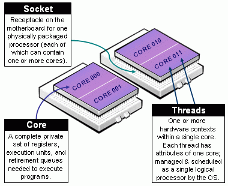

Slurm Resource and Job Management System¶
ULHPC uses Slurm (Simple Linux Utility for Resource Management) for cluster/resource management and job scheduling. This middleware is responsible for allocating resources to users, providing a framework for starting, executing and monitoring work on allocated resources and scheduling work for future execution.
Official docs Official FAQ ULHPC Tutorial/Getting Started

IEEE ISPDC22: ULHPC Slurm 2.0
If you want more details on the RJMS optimizations performed upon Aion acquisition, check out our IEEE ISPDC22 conference paper (21st IEEE Int. Symp. on Parallel and Distributed Computing) presented in Basel (Switzerland) on July 13, 2022.
IEEE Reference Format | ORBilu entry | ULHPC blog post | slides
Sebastien Varrette, Emmanuel Kieffer, and Frederic Pinel, "Optimizing the Resource and Job Management System of an Academic HPC and Research Computing Facility". In 21st IEEE Intl. Symp. on Parallel and Distributed Computing (ISPDC22), Basel, Switzerland, 2022.
TL;DR Slurm on ULHPC clusters¶
In its concise form, the Slurm configuration in place on ULHPC supercomputers features the following attributes you should be aware of when interacting with it:
- Predefined Queues/Partitions depending on node type
batch(Default Dual-CPU nodes) Max: 64 nodes, 2 days walltimegpu(GPU nodes nodes) Max: 4 nodes, 2 days walltimebigmem(Large-Memory nodes) Max: 1 node, 2 days walltime- In addition:
interactive(for quicks tests) Max: 2 nodes, 2h walltime- for code development, testing, and debugging
- Queue Policy: cross-partition QOS, mainly tied to priority level (
low\rightarrowurgent)longQOS with extended Max walltime (MaxWall) set to 14 days- special preemptible QOS for best-effort jobs:
besteffort.
- Accounts hierarchy associated to supervisors (multiple
associations possible), projects or trainings
- you MUST use the proper account as a detailed usage tracking is performed and reported.
- Slurm Federation configuration between
irisandaion- ensures global policy (coherent job ID, global scheduling, etc.) within ULHPC systems
- easily submit jobs from one cluster to another using
-M, --cluster aion|iris
For more details, see the appropriate pages in the left menu (or the above conference paper).
Jobs¶
A job is an allocation of resources such as compute nodes assigned to a user for an certain amount of time. Jobs can be interactive or passive (e.g., a batch script) scheduled for later execution.
What characterize a job?
A user jobs have the following key characteristics:
- set of requested resources:
- number of computing resources: nodes (including all their CPUs and cores) or CPUs (including all their cores) or cores
- amount of memory: either per node or per CPU
- (wall)time needed for the users tasks to complete their work
- a requested node partition (job queue)
- a requested quality of service (QoS) level which grants users specific accesses
- a requested account for accounting purposes
Once a job is assigned a set of nodes, the user is able to initiate parallel work in the form of job steps (sets of tasks) in any configuration within the allocation.
When you login to a ULHPC system you land on a access/login node. Login nodes are only for editing and preparing jobs: They are not meant for actually running jobs. From the login node you can interact with Slurm to submit job scripts or start interactive jobs, which will be further run on the compute nodes.
Submit Jobs¶
There are three ways of submitting jobs with slurm, using either sbatch, srun or salloc:
### /!\ Adapt <partition>, <qos>, <account> and <command> accordingly
sbatch -p <partition> [--qos <qos>] [-A <account>] [...] <path/to/launcher.sh>
### /!\ Adapt <partition>, <qos>, <account> and <command> accordingly
srun -p <partition> [--qos <qos>] [-A <account>] [...] ---pty bash
srun is also to be using within your launcher script to initiate a job step.
# Request interactive jobs/allocations
### /!\ Adapt <partition>, <qos>, <account> and <command> accordingly
salloc -p <partition> [--qos <qos>] [-A <account>] [...] <command>
sbatch¶
sbatch is used to submit a batch launcher script for later execution, corresponding to batch/passive submission mode.
The script will typically contain one or more srun commands to launch parallel tasks.
Upon submission with sbatch, Slurm will:
- allocate resources (nodes, tasks, partition, constraints, etc.)
- runs a single copy of the batch script on the first allocated node
- in particular, if you depend on other scripts, ensure you have refer to them with the complete path toward them.
When you submit the job, Slurm responds with the job's ID, which will be used to identify this job in reports from Slurm.
# /!\ ADAPT path to launcher accordingly
$ sbatch <path/to/launcher>.sh
Submitted batch job 864933
srun¶
srun is used to initiate parallel job steps within a job OR to start an interactive job
Upon submission with srun, Slurm will:
- (eventually) allocate resources (nodes, tasks, partition, constraints, etc.) when run for interactive submission
- launch a job step that will execute on the allocated resources.
A job can contain multiple job steps executing sequentially or in parallel on independent or shared resources within the job's node allocation.
salloc¶
salloc is used to allocate resources for a job
in real time. Typically this is used to allocate resources (nodes, tasks, partition, etc.) and spawn a
shell. The shell is then used to execute srun commands to launch
parallel tasks.
Specific Resource Allocation¶
Within a job, you aim at running a certain number of tasks, and Slurm allow for a fine-grain control of the resource allocation that must be satisfied for each task.
Beware of Slurm terminology in Multicore Architecture!

- Slurm Node = Physical node, specified with
-N <#nodes>- Advice: always explicit number of expected number of tasks per node using
--ntasks-per-node <n>. This way you control the node footprint of your job.
- Advice: always explicit number of expected number of tasks per node using
- Slurm Socket = Physical Socket/CPU/Processor
- Advice: if possible, explicit also the number of expected number of tasks per socket (processor) using
--ntasks-per-socket <s>.- relations between
<s>and<n>must be aligned with the physical NUMA characteristics of the node. - For instance on aion nodes,
<n> = 8*<s> - For instance on iris regular nodes,
<n>=2*<s>when on iris bigmem nodes,<n>=4*<s>.
- relations between
- Advice: if possible, explicit also the number of expected number of tasks per socket (processor) using
- (the most confusing): Slurm CPU = Physical CORE
- use
-c <#threads>to specify the number of cores reserved per task. - Hyper-Threading (HT) Technology is disabled on all ULHPC compute nodes. In particular:
- assume #cores = #threads, thus when using
-c <threads>, you can safely setto automatically abstract from the job contextOMP_NUM_THREADS=${SLURM_CPUS_PER_TASK:-1} # Default to 1 if SLURM_CPUS_PER_TASK not set - you have interest to match the physical NUMA characteristics of the compute node you're running at (Ex: target 16 threads per socket on Aion nodes (as there are 8 virtual sockets per nodes, 14 threads per socket on Iris regular nodes).
- assume #cores = #threads, thus when using
- use
The total number of tasks defined in a given job is stored in the $SLURM_NTASKS environment variable.
This is very convenient to abstract from the job context to run MPI tasks/processes in parallel using for instance:
srun -n ${SLURM_NTASKS} [...]
We encourage you to always explicitly specify upon resource allocation the number of tasks you want per node/socket (--ntasks-per-node <n> --ntasks-per-socket <s>), to easily scale on multiple nodes with -N <N>. Adapt the number of threads and the settings to match the physical NUMA characteristics of the nodes
16 cores per socket and 8 (virtual) sockets (CPUs) per aion node.
{sbatch|srun|salloc|si} [-N <N>] --ntasks-per-node <8n> --ntasks-per-socket <n> -c <thread>- Total:
<N>\times 8\times<n>tasks, each on<thread>threads - Ensure
<n>\times<thread>= 16 - Ex:
-N 2 --ntasks-per-node 32 --ntasks-per-socket 4 -c 4(Total: 64 tasks)
- Total:
14 cores per socket and 2 sockets (physical CPUs) per regular iris.
{sbatch|srun|salloc|si} [-N <N>] --ntasks-per-node <2n> --ntasks-per-socket <n> -c <thread>- Total:
<N>\times 2\times<n>tasks, each on<thread>threads - Ensure
<n>\times<thread>= 14 - Ex:
-N 2 --ntasks-per-node 4 --ntasks-per-socket 2 -c 7(Total: 8 tasks)
- Total:
28 cores per socket and 4 sockets (physical CPUs) per bigmem iris
{sbatch|srun|salloc|si} [-N <N>] --ntasks-per-node <4n> --ntasks-per-socket <n> -c <thread>- Total:
<N>\times 4\times<n>tasks, each on<thread>threads - Ensure
<n>\times<thread>= 28 - Ex:
-N 2 --ntasks-per-node 8 --ntasks-per-socket 2 -c 14(Total: 16 tasks)
- Total:
Job submission options¶
There are several useful environment variables set be Slurm within an allocated job.
The most important ones are detailed in the below table which summarizes the main job submission options offered with {sbatch | srun | salloc} [...]:
| Command-line option | Description | Example |
|---|---|---|
-N <N> |
<N> Nodes request |
-N 2 |
--ntasks-per-node=<n> |
<n> Tasks-per-node request |
--ntasks-per-node=28 |
--ntasks-per-socket=<s> |
<s> Tasks-per-socket request |
--ntasks-per-socket=14 |
-c <c> |
<c> Cores-per-task request (multithreading) |
-c 1 |
--mem=<m>GB |
<m>GB memory per node request |
--mem 0 |
-t [DD-]HH[:MM:SS]> |
Walltime request | -t 4:00:00 |
-G <gpu> |
<gpu> GPU(s) request |
-G 4 |
-C <feature> |
Feature request (broadwell,skylake...) |
-C skylake |
-p <partition> |
Specify job partition/queue | |
--qos <qos> |
Specify job qos | |
-A <account> |
Specify account | |
-J <name> |
Job name | -J MyApp |
-d <specification> |
Job dependency | -d singleton |
--mail-user=<email> |
Specify email address | |
--mail-type=<type> |
Notify user by email when certain event types occur. | --mail-type=END,FAIL |
At a minimum a job submission script must include number of nodes, time, type of partition and nodes (resource allocation constraint and features), and quality of service (QOS).
If a script does not specify any of these options then a default may be applied.
The full list of directives is documented in the man pages for the sbatch command (see. man sbatch).
#SBATCH directives vs. CLI options¶
Each option can be specified either as an #SBATCH [...] directive in the job submission script:
#!/bin/bash -l # <--- DO NOT FORGET '-l'
### Request a single task using one core on one node for 5 minutes in the batch queue
#SBATCH -N 2
#SBATCH --ntasks-per-node=1
#SBATCH -c 1
#SBATCH --time=0-00:05:00
#SBATCH -p batch
# [...]
Or as a command line option when submitting the script:
$ sbatch -p batch -N 2 --ntasks-per-node=1 -c 1 --time=0-00:05:00 ./first-job.sh
The command line and directive versions of an option are
equivalent and interchangeable:
if the same option is present both on the command line and as a directive,
the command line will be honored.
If the same option or directive is specified twice, the last value supplied
will be used.
Also, many options have both a long form, eg --nodes=2 and a short form, eg -N 2. These are equivalent and interchangable.
Common options to sbatch and srun
Many options are common to both sbatch and srun, for example
sbatch -N 4 ./first-job.sh allocates 4 nodes to first-job.sh, and
srun -N 4 uname -n inside the job runs a copy of uname -n on each of 4 nodes.
If you don't specify an option in the srun command line, srun will
inherit the value of that option from sbatch.
In these cases the default behavior of srun is to assume the same
options as were passed to sbatch. This is achieved via environment
variables: sbatch sets a number of environment variables with names
like SLURM_NNODES and srun checks the values of those
variables. This has two important consequences:
- Your job script can see the settings it was submitted with by checking these environment variables
- You should NOT override these environment variables. Also be aware
that if your job script tries to do certain tricky things, such as using
sshto launch a command on another node, the environment might not be propagated and your job may not behave correctly
HW characteristics and Slurm features of ULHPC nodes¶
When selecting specific resources allocations, it is crucial to match the hardware characteristics of the computing nodes. Details are provided below:
| Node (type) | #Nodes | #Socket / #Cores | RAM [GB] | Features |
|---|---|---|---|---|
aion-[0001-0318] |
318 | 8 / 128 | 256 | batch,epyc |
iris-[001-108] |
108 | 2 / 28 | 128 | batch,broadwell |
iris-[109-168] |
60 | 2 / 28 | 128 | batch,skylake |
iris-[169-186] (GPU) |
18 | 2 / 28 | 768 | gpu,skylake,volta |
iris-[191-196] (GPU) |
6 | 2 / 28 | 768 | gpu,skylake,volta32 |
iris-[187-190] (Large-Memory) |
4 | 4 / 112 | 3072 | bigmem,skylake |
As can be seen, Slurm [features] are associated to ULHPC compute nodes and permits to easily filter with the -C <feature> option the list of nodes.
To list available features, use sfeatures:
sfeatures
# sinfo -o '%20N %.6D %.6c %15F %12P %f'
# NODELIST NODES CPUS NODES(A/I/O/T) PARTITION AVAIL_FEATURES
# [...]
Always try to align resource specifications for your jobs with physical characteristics
The typical format of your Slurm submission should thus probably be:
sbatch|srun|... [-N <N>] --ntasks-per-node <n> -c <thread> [...]
sbatch|srun|... [-N <N>] --ntasks-per-node <#sockets * s> --ntasks-per-socket <s> -c <thread> [...]
<N>\times<n> TASKS (first form) or
<N>\times \#sockets \times<s> TASKS (second form), each on
<thread> threads.
You MUST ensure that either:
<n>\times<thread>matches the number of cores avaiable on the target computing node (first form), or<n>=\#sockets \times<s>, and<s>\times<thread>matches the number of cores per socket available on the target computing node (second form).
16 cores per socket and 8 virtual sockets (CPUs) per aion node.
Depending on the selected form, you MUST ensure that either
<n>\times<thread>=128, or that <n>=8<s> and <s>\times<thread>=16.
### Example 1 - use all cores available
{sbatch|srun|salloc} -N 2 --ntasks-per-node 32 --ntasks-per-socket 4 -c 4 [...]
# Total: 64 tasks (spread across 2 nodes), each on 4 cores/threads
### Example 2 - use all cores available
{sbatch|srun|salloc} --ntasks-per-node 128 -c 1 [...]
# Total; 128 (single-core) tasks
### Example 3 - use all cores available
{sbatch|srun|salloc} -N 1 --ntasks-per-node 8 --ntasks-per-socket 1 -c 16 [...]
# Total: 8 tasks, each on 16 cores/threads
### Example 4 - use all cores available
{sbatch|srun|salloc} -N 1 --ntasks-per-node 2 -c 64 [...]
# Total: 2 tasks, each on 64 cores/threads
14 cores per socket and 2 sockets (physical CPUs) per regular iris
node. Depending on the selected form, you MUST ensure that either
<n>\times<thread>=28, or that <n>=2<s> and <s>\times<thread>=14.
### Example 1 - use all cores available
{sbatch|srun|salloc} -N 3 --ntasks-per-node 14 --ntasks-per-socket 7 -c 2 [...]
# Total: 42 tasks (spread across 3 nodes), each on 2 cores/threads
### Example 2 - use all cores available
{sbatch|srun|salloc} -N 2 --ntasks-per-node 28 -c 1 [...]
# Total; 56 (single-core) tasks
### Example 3 - use all cores available
{sbatch|srun|salloc} -N 2 --ntasks-per-node 2 --ntasks-per-socket 1 -c 14 [...]
# Total: 4 tasks (spread across 2 nodes), each on 14 cores/threads
28 cores per socket and 4 sockets (physical CPUs) per bigmem iris
node.
Depending on the selected form, you MUST ensure that either
<n>\times<thread>=112, or that <n>=4<s> and <s>\times<thread>=28.
### Example 1 - use all cores available
{sbatch|srun|salloc} -N 1 --ntasks-per-node 56 --ntasks-per-socket 14 -c 2 [...]
# Total: 56 tasks on a single bigmem node, each on 2 cores/threads
### Example 2 - use all cores available
{sbatch|srun|salloc} --ntasks-per-node 112 -c 1 [...]
# Total; 112 (single-core) tasks
### Example 3 - use all cores available
{sbatch|srun|salloc} -N 1 --ntasks-per-node 4 --ntasks-per-socket 1 -c 28 [...]
# Total: 4 tasks, each on 28 cores/threads
Using Slurm Environment variables¶
Recall that the Slurm controller will set several SLURM_* variables in the environment of
the batch script.
The most important are listed in the table below - use them wisely to make your
launcher script as flexible as possible to abstract and adapt from the
allocation context, "independently" of the way the job script has been
submitted.
| Submission option | Environment variable | Typical usage |
|---|---|---|
-N <N> |
SLURM_JOB_NUM_NODES orSLURM_NNODES |
|
--ntasks-per-node=<n> |
SLURM_NTASKS_PER_NODE |
|
--ntasks-per-socket=<s> |
SLURM_NTASKS_PER_SOCKET |
|
-c <c> |
SLURM_CPUS_PER_TASK |
OMP_NUM_THREADS=${SLURM_CPUS_PER_TASK} |
SLURM_NTASKSTotal number of tasks |
srun -n $SLURM_NTASKS [...] |